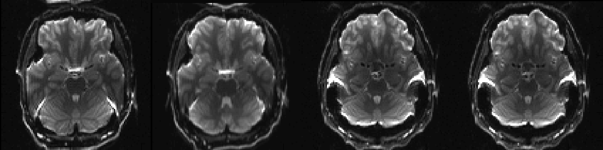
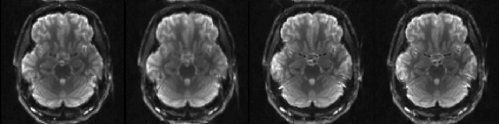
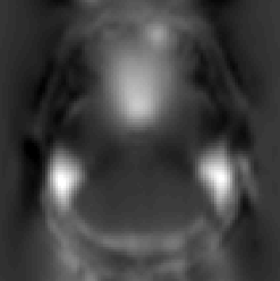

Contents
Running topup
A call to topup will typically look something like
topup --imain=all_my_b0_images.nii --datain=acquisition_parameters.txt --config=b02b0.cnf --out=my_output
where all_my_b0_images.nii is a 4D image file containing all the data I want to use for the estimation of the field. Typically this will contain two, or more, b=0 volumes that have been acquired in slightly different ways so that translation off-resonance field->distortions is different in the different volumes.

Above you can see a selected slice from the four volumes in an example file called my_b0_images.nii.gz. It is immediately obvious that the distortions in the first two images are vastly different from those in the two last images. If we take a look at the associated acqparams.txt file
0 -1 0 0.062
0 -1 0 0.062
0 1 0 0.062
0 1 0 0.062
we can see why. The two first images have been acquired with negative phase-encode blips in the y-direction, which means that signal from an area with "higher than expected" field (such as just above the ear-canals) will be displaced downwards. Conversely the two last images have been acquired with positive blips which means that signal from those same areas would be displaced upwards.
In addition to that we can see that the second image looks a little bit different to the first, despite having been acquired with identical parameters. This may mean that the subject moved between the acquisitions of the two images.
Let us now run topup. We will use the command
topup --imain=my_b0_images --datain=acqparams.txt --config=b02b0.cnf --out=my_topup_results --fout=my_field --iout=my_unwarped_images
Here we have asked for a little bit more detailed output by specifying also --fout and --iout. One would normally be content with just the --out output, but for pedagogical reasons we will look also at the other output for this demonstration run.
So, let us first take a look at my_unwarped_images.nii.gz to see if topup has done a decent job at correcting the distortions.

I think we can agree that that looks quite good and that we have no reason to think that topup ran into any problems. Let us now look at my_topup_results_movpar.txt to see if we were right in our suspicion that there had been some movement.
0 0 0 0 0 0
-0.073237 0.025761 -0.046236 -0.088544 -0.00099632 0.0020353
-0.131236 0 -0.153924 0.000365648 -0.00146637 -0.000709675
-0.147020 0.284489 -0.16171 -0.00209923 -0.00193369 -0.000452118
In order to fully understand this file you need to have a look at the full description but for now we just focus on the second row (corresponding to the second volume in my_b0_images.nii.gz) and the fourth column (corresponding to rotation (in radians) around the x-axis). We see there a value of -0.089, which corresponds to a five degrees rotation. So it seems we were right in our suspicion.
We next take a look at my_field (the output from --fout) to see what topup thinks the off-resonance field looks like.

which has been scaled so that black corresponds to -50Hz and white to 150Hz. This looks like a reasonable off-resonance field with higher than "expected" field above the ear-canals and the roof of the sinuses.
Finally we will take a look at how topup stores this field by looking at my_topup_results_fieldcoef.nii.gz.
TopupUsersGuide/fieldcoef_images.png "fieldcoef_images.png")
We see that while instantly recognisable it is not identical to the field image. It is the weights/coefficients of a spline-representation of the field, which means that to get from the "fieldcoef" image to the field image one needs to convolve the former with a spline kernel. The reason topup stores it as spline coefficients is because it saves space and also gives immediate access to a continuous representation of the field.
Life after topup -- applytopup
The typical use of topup is to use a pair, or a smallish number of pairs to estimate a susceptibility-induced off-resonance field, and then apply that to (i.e. use it to unwarp) a larger set of pairs. Typically the image volumes in --imain will be a set of b=0 scans taken from a larger set of b=0 and diffusion weighted images. The resulting field will then be applied to all images, i.e. the b=0 and diffusion weighted images alike. The tool for applying the output of topup to some larger/other set of images is applytopup.
Configuration files
A configuration file is a text file containing some or all of the parameters that can be specified for topup. The name of the file should be passed as argument to the --config parameter. It should be an ascii-file with one row for each parameter, and where comments (ignored by topup) are preceeded by a #.
A very simple (and silly) config file named my_silly_file.cnf could look like
# I want to use membrane energy for regularisation --regmod=membrane_energy
It becomes more useful when it specifes all or most parameters with values suited for ones particular application.
When a parameter is specified both in the config-file and on the command line, the value on the command line takes precedence. For example with the example above we could run topup with
topup --imain=blip_up,blip_down --datain=blips_up_and_down.txt --config=my_silly_file --regmod=bending_energy
and the --regmod=bending_energy on the command line will take precedence over the specification in my_silly_file.
When you specify --config=my_file, i.e. without explicit path or extension, fnirt will search for ./my_file, ./my_file.cnf, ${FSLDIR}/etc/flirtsch/my_file and ${FSLDIR}/etc/flirtsch/my_file.cnf in that order and use the first one that is found.
As part of the topup distribution we supply a predefined config file: b02b0.cnf. It contains parameters that have been found to be useful for registering a set of good quality b=0 images. Together with the override facility this is probably the starting (an quite possible finishing) point for most users. Note that b02b0.cnf uses sub-sampling to speed up the estimation and that topup requires that the image-size is a multiple of the sub-sampling level. So, for example if you want to use sub-sampling by a factor of 2 the image-size should be a multiple of 2 in all directions (e.g. 96x96x48).
If you have an application for which you think the predefined config file isn't appropriate you may want to read about the individual parameters below and write your own file. We would then recommend to start with the predefined file and gradually change it to suit your particular requirements.
List of parameters
- Parameters that specify input files
--imain=filename
Name of a file with input images optained with different PE polarity/direction. E.g. my_b0_images.nii.--datain=filename
Name of text file with information about the acquisition of the images in --imain. E.g. my_parameters.txt--config=config_file
Name of text-file with parameter settings. If you read about nothing else, read about this.
- Parameters specifying names of output-files
--out=filename
Name of output-files containing the spline coefficients for the off-resonance field and the subject movement parameters.--fout=filename
Name of output-file containing the off-resonance field.--iout=filename
Name of output-file containing unwarped images.--logout=filename
Name of output-file containing the log.
- Parameters specified once per resolution/subsampling level
--subsamp=level1,level2,...
Levels of sub-sampling for which to perform the registration. E.g. 4,2,1--fwhm=level1,level2,...
Amount of smoothing to apply to images for each level. E.g. 8,4,0--miter=level1,level2,...
Number of iterations to run for each level. E.g. 5,5,10--lambda=level1,level2,...
Relative weight between sum-of-squared differences and regularisation for each level. E.g. 300,75,30--estmov=level1,level2,...
Determines wether to estimate or keep movement parameters constant for a given level. 1 means estimate and 0 means keep fixed. E.g. 1,1,0--minmet=level1,level2,...
Specifies what minimisation method to use for each level. 0 means Gauss-Newton and 1 means Scaled Conjugate Gradient. E.g. 0,0,1
- Parameters specified once and for all
--ssqlambda=0/1
If set to 1, implies that --lambda should be multiplied by sum-of-squared differences. Default is 1.--regmod=model
Specifies what regularisation-model should be used. E.g. membrane_energy. Default is bending_energy--splineorder=num
Order of B-spline (2/3). Default is 3.--numprec=float/double
Numerical precision for calculating and representing the Hessian. Default is double--interp=linear/spline
Interpolation model for deducing intensities when not on voxel centres. Default is spline--scale=0/1
If set to 1 the volumes in --imain are scaled to a common mean. Default is 0.--verbose
Print progress information to the screen while running. Can be useful to pipe into file before reporting problems--help
Take a wild stab.
Selected parameters explained
--imain
The value for this parameter should be the name of an image file (typically .nii or .nii.gz) containing images acquired with different phase-encoding parameters. All types of images can be used to estimate the distortions, but the b0 images have the best SNR so it is often best to use those. Furthermore it is often the case that diffusion weighted images are also affected by eddy current (EC) induced distortions, which means that any off-resonance field estimated from a pair of dwis will include the EC component as well, making it specific to that field.
Let us say you have acquired a bunch of b0 and dwi images using positive phase-encode blips in the 4D file bup.nii and another bunch of b0 and dwi's acquired with negative PE blips in tdn.nii. You would then start by extracting the images you want to use (e.g. the b0 images) using fslroi. For example fslroi bup b0_bup 0 3 would extract the three first volumes (assuming these are the b0 images) from bup.nii, putting them in b0_bup.nii. After having done the same thing for tdn.nii you can merge the two files using fslmerge, e.g. fslmerge -t b0 b0_bup b0_bdn which will put all 6 b0 images in the same file (b0.nii) with the three acquired with positive phase-encode blips first.
--datain
This parameter specifies a text-file that contains information about how the volumes in --imain were acquired. Let us use the file b0.nii that we created above as an example. The file should in that case look like
0 1 0 0.087
0 1 0 0.087
0 1 0 0.087
0 -1 0 0.087
0 -1 0 0.087
0 -1 0 0.087
where the three first columns specify the direction of the phase-encoding. In these cases there is a non-zero value only in the second column, indicating that phase-encoding is performed in the y-direction (typically corresponding to the anterior-posterior direction). The three first rows have a (positive) 1 in the second position, meaning that positive phase-encode blips were used, followed by three rows with -1 signifying negative phase encode blips. The fourth column is the total readout time (defined as the time from the centre of the first echo to the centre of the last) in seconds.
If your readout time is identical for all acquisitions you don't neccessarily have to specify a valid value in this column (you can e.g. just set it to 1), but if you do specify correct values the estimated field will be correctly scaled in Hz, which may be a useful sanity check. Also note that this value corresponds to the time you would have had had you collected all k-space lines. I.e. let us say you collect a 96x96 matrix with 1ms dwell-time (time between centres of consecutive echoes) and let us further say that you have opted for partial k-space (in order to reduce the echo time), collecting only 64 echoes. In this case the level of distortion will be identical to what it would have been had you collected all 96 echoes, and you should put 0.095 in the fourth column.
Topup gives you lots of freedom in how to acquire your data and still be able to calculate and correct for distortions. You can e.g. use
1 0 0 0.087
0 1 0 0.087
indicating that the first scan was acquired with phase-encoding in the left-right direction and the second in the anterior-posterior direction. One can even acquire ones data like
0 1 0 0.087
0 1 0 0.107
i.e. with distortions going in the same direction in both acquisitions but with slightly larger distortions in one case (the latter in this example).
Despite this flexibility it is nevertheless best to manipulate the phase-encoding so that it yields the maximum difference in the observed images, and that will a reversal of the blips. So unless one has a very good reason to do otherwise that is the recommended type of acquisition.
N.B. that topup's definition of positive is simply given by increasing indicies into the image file and may or may not coincide with how a given scanner manufacturer has defined the positive direction for phase-encode blips. If both your acquisitions perform phase-encoding along the same axis, but with different signs/readout-times, topup will still be able to calculate and correct for the distortions, though the estimated off-resonance field may be sign reversed. However, if ones acquisitions have been performed with phase-encoding along different axes it is important to get the signs to correspond to the definition by your scanner manufacturer. I recommend simply trial and error to work it out.
N.B. 2, please do NOT confuse phase-encode direction and diffusion gradient direction. They are completely independent.
--out
The value for the --out parameter is used as the basename for the output files produced by topup. Given a set of files, let us use the example in --imain above, topup will estimate a field, that is common to all scans, and movement parameters for scans 2-n. The movement parameters will encode the positions of scans 2-n relative to scan 1.
Hence, given --out=my_out, topup will write two files, one image file containing spline coefficients encoding the field (named my_out_fieldcoef.nii or my_out_fieldcoef.nii.gz depending on the global FSL settings) and one text file named my_out_movpar.txt. In the six scan example above the .txt output was
0 0 0 0 0 0
-0.0323452 0.0257616 -0.131612 -5.99714e-05 -0.00182856 -0.000162457
-0.0244460 0.2844895 -0.129879 -1.05641e-05 -0.00173325 -3.44437e-05
0.391246 0 -0.514049 -0.00478399 -0.00929278 0.00235141
0.402124 -0.131236 -0.531344 -0.00554897 -0.00924577 0.00213802
0.420413 -0.147020 -0.513022 -0.00566367 -0.00943247 0.00218128
where we can notice that the first scan is represented by a row of zeros. The three first columns represent translations (mm) in the x-, y- and z-directions respectively and the next three columns represent rotations (radians) around the x-, y- and z-axes. Notice also that the second column has a zero for the fourth scan (the first scan with a different blip-direction). This is because the distortions go along this direction and there is no way to disambiguate a subject translation in this direction from an offset in the displacements constituting the distortions.
N.B. that there is no general non-ambigous way to encode a transformation matrix by a set of translations and rotations. Hence it would in general be a bad idea to use the values in the .txt output from --out to make your own transformation matrices (if for some reason you would need these). Instead you should use the tools that have been designed to work together with topup: applytopup and eddy.
--fout
Specifies the name of an image file containing the estimated field in Hz. The actual information is the same as that in the *_fieldcoef.nii.gz file from the --out parameter. They are different in that the --fout image contains the actual voxel-values (as opposed to spline coefficients) which makes it easier to use with applications that cannot read the topup output format. It is for example useful if you want to feed it as a fieldmap into FEAT.
--iout
Specifies the name of a 4D image file that contains unwarped and movement corrected images. Each volume in the --imain will have a corresponding corrected volume in --iout. This output uses traditional interpolation and Jacobian modulation (see applytopup) and is used mainly as a sanity check that things have worked and that topup has estimated a reasonable field. It can also be useful for making an undistorted mask for use in eddy by running BET on the first volume (or the average of all volumes) of the output.
--subsamp
A multi-resolution approach is a way of avoiding local minima. It consists of sub-sampling, estimating the warps at the current scale, up-sample, estimating the warps at the next scale etc The scheme for the multi resolution approach is given by the --subsamp parameter. So for example
topup --imain=my_b0_images --datain=my_acquisition_parameters --subsamp=4,2,1
means that data will be subsampled by a factor of 4 and the transform will be calculated at that level. It will the be subsampled by a factor of 2 (i.e. an upsampling compared to the previous step) and the warps will be estimated at that scale, with the warps from the first scale as a starting estimate. And finally this will be repeated at the full resolution (i.e. subsampling 1).
The value of the --subsamp parameter will determine the "number of registrations" that are performed as steps in the "total" registration. There are a number of other parameters that can the be set on a "sub-registration" or on a "total registration" basis. So for example
topup --imain=my_b0_images --datain=my_acquisition_parameters --subsamp=4,2,1 --fwhm=8,4,0
Means that you request three "sub-registrations" with sub-samplings 4, 2 and 1 respectively and that for the first registration you want the your images smoothed with an 8mm FWHM Gaussian filter, for the second with a 4mm filter and for the final step no smoothing at all. On the other hand
topup --imain=my_b0_images --datain=my_acquisition_parameters --subsamp=4,2,1 --fwhm=8
means that you want the images smoothed to 8mm FWHM for all registration steps. These other parameters must either be specified once, and will then be applied to all sub-registrations, or as many times as there are sub-registraions. The parameters for which this is true are
The sub-sampling steps have to be monotonously decreasing, but do not have to be unique. One may for example want to run all steps at the full resolution, but with decreasing amount of regularistaion, as an optional strategy for avoiding local minima. That can be done e.g. with a command like
topup --imain=my_b0_images --datain=my_acquisition_parameters --subsamp=1,1,1 --lambda=100,50,25
--warpres
Specifies the resolution (in mm) of the warps. Specifying e.g. --warpres=10 means that an isotropic knot-spacing of 10mm is used for all levels of --subsamp. If instead specifying e.g. --warpres=10,5 indicates that a (n isotropic) knot-spacing of 10mm should be used for the first level of --subsamp followed by 5mm for the second level. A warp resolution of e.g. 10mm does not imply that 10mm is the highest accuracy that can be obtained for registration of any given structure. It is rather related to how fast the field can change as on goes from one point to the next in the field. The warps/field are implemented as cubic/quadratic B-splines with a knot-spacing that has to be an integer multiple of the voxel-size of the --imain images. If a value is specified for --warpres that is not and integer multiple the value will be rounded down. So if for example the voxel-size of the --imain image is 3x3x4mm and --warpes is specified as --warpres=10 the actual resolution (knot-spacing) of the warps will be 9x9x8mm.
When running topup it is advantageous to go to a quite high warp-resolution, typically all the way to the voxel size (i.e. one spline per voxel). To achieve an actual knot-spacing of 1 voxel in all directions one should specify a knot-spacing smaller than two voxels in the direction with the smallest voxel size. If one e.g. has isotropic voxels with size 2.5x2.5x3.5mm, specifying --warpres=4 (4<2*2.5) will give an actual knot-spacing of 2.5x2.5x3.5mm (i.e. 1x1x1voxels).
Increasing the resolution means that topup will need more execution time and more memory. Most of the time and memory is spent on estimating and representing the Hessian. It may therefore be advantageous to swith to an alternative minimization method (i.e. Scaled Conjugate Gradient, specified by --minmet=1) for the final high resolution steps.
--miter
Specifies the number of iterations that should be performed for each sub-registration. At present there is no proper convergence criterion implemented in topup. Instead a fixed number of iterations is used for each step.
The two minimization methods implemented in topup calculates and uses quite different amounts of information at each iteration. As a rule of thumb Levenberg-Marquardt (--minmet=0) uses relatively few, expensive, iterations whereas the Scaled Conjugate Gradient (--minmet=1) method needs more, albeit less expensive, iterations.
Note also that it is typically not critical to run to full convergence at the higher levels since these just serve as starting estimates for the lower levels.
--fwhm
Specifies the amount of smoothing that should be applied to the images in --imain. It is typically a good idea to match this to the amount of sub-sampling you are using. An example would be the command
topup --imain=my_b0_images --datain=my_acquisition_parameters --subsamp=4,2,1 --fwhm=8,4,0
which smoothes the --imain images with an 8mm FWHM Gaussian filter prior to subsampling with a factor of 4 for the first level of sub-registration. For the second level it smoothes it by 4mm prior to subsampling by a factor of 2. For the final level it applies no smoothing at all.
--lambda
--estmov
Specifies wether or not to estimate the movement parameters (--estmov=1) or keep them fixed (--estmov=0) for that level. It is typically set to 1 for the early sub-sampling levels and changed to 0 for the later. The idea there is that already when we have estimated the warps at an intermediate resolution will we have estimated the movement parameters with sufficient precision to allow us to fix them for the reminder of the estimation. See the entry for --minmet below for an explanation of why that is beneficial.
--minmet
Specifies what minimisation method to use. The default (corresponding to --minmet=0) is Gauss-Newton which uses explicit calculations of the gradient and Hessian to achieve convergence in a small number of iterations.
A particular strength of Gauss-Newton is that it works well even when the values in the gradient have vastly different scales. Imagine for example changing the value of a spline coefficient by 1. That will change the warps in a very small part of the brain and might change the sum-of-squared differences by ~0.1%. Imagine now changing the value of the rotation parameter for rotation around the z-axis by 1 (N.B. 1 radian is ~57degrees). This will have a huge impact on the sum-of-squared differences and could easily change it by 1000%. So we have ~4 orders of magnitude in difference between these components of the gradient. This is a case that many (most) minimisation algorithms struggle very badly with, and in our experience it is really only Gauss-Newton (and derivates thereof) that is successful in these cases. Therefore we always recommend using Gauss-Newton (--minmet=0) when estimating warps and movements.
A problem with Gauss-Newton is that the calculation of the Hessian is time consuming and in particular the storage of it is very RAM demanding. When estimating the warps at full resolution the RAM requirement for the Hessian corresponds to ~700 image volumes. It can therefore be preferable to switch to the Scaled Conjugate Gradient method (--minmet=1) when estimation the warps at the highest resolution. As explained above that can be a problem if one also tries to estimate the movement parameters. We therefore recommend keeping these constant (see --estmov above) when estimating the warps at the highest resolution levels.
--ssqlambda
The use of several sub-sampling steps (with different values of --lambda) helps prevent the registration from venturing into local minima. However, within a given sub-sampling step that regularisation is constant, and that could in turn cause the algorithm to take a "poor" initial step for that resolution level. By weighting --lambda by the current value for the sum-of-squared differences the effective weight of the regularisation becomes higher for the initial iterations (when we are far from the solution and the sum-of-squares is large). That means that the initial step/steps are a little smoother than they would otherwise be, and hopefully that reduces the risk of finding a local minima.
--ssqlambda is set to 1 as default, and it is typically a good idea to keep it like that. N.B. that the setting of --ssqlambda influences the recommended value/values for --lambda. The (average over all voxels) of the sum-of-squared differences is typically in the range 100-1000, and if --ssqlambda is set to 0 the value/values for --lambda should be adjusted up accordingly.
--regmod
The value of --lambda determines the relative weight between the sum-of-squared differences and some function &epsilon of the warps. However, it is not clear what the exact form of that function (&epsilon(w)) should be. We clearly desire "smoothness" in the warps so that points that are close together in the original space ends up (reasonably) close together in the warped space, but there are many potential options for how a particular local warp should be penalised by &epsilon(w). In topup we have implemented two different choices for &epsilon(w): Membrane Energy (--regmod=membrane_energy) or Bending Energy (--regmod=bending_energy). Note that the two functions have vastly different scales. The membrane energy is based on the first derivatives and the bending energy on the second derivatives. The second derivatives will typically be much smaller than the first derivatives, and consequently &lambda will have to be larger for bending energy to yield approximately the same level of regularisation.
--splineorder
Specifies the order of the B-spline functions modelling the off-resonance field. A spline-function is a piecewise continuous polynomial-function and the order of the spline determines the order of the polynomial and the support of the spline. In topup one can use splines of order 2 (quadratic) or 3 (the "well known" cubic B-spline). A spline of lower order (2 in this case) has a smaller support, i.e. it "covers" fewer voxels, for a given knot-spacing/warp-resolution. This means that the calculation of the hessian matrix H in the minimisation will be faster, and also that H will be sparser and thus use require less memory. That means that going to --splineorder=2 (compared to the default 3) will allow you to push the resolution of the warps a little further and/or save execution time and memory.
The downside with a 2nd order spline is that the resulting field will not have continuous 2nd derivatives which creates some difficulties when using bending energy for regularisation. However, the approximations we are using seem to work so it is not obvious if there really is an issue. We are using --splineorder=3 as default in topup because we have more experience with using that. It is not inconcievable that that will change as we gain more experience.
--numprec
Its value can be either float or double (default) and it specifies the precision that the hessian H is calculated and stored in. Changing this to float will decrease the amount of RAM needed to store H and will hence allow one to go to slightly higher warp-resolution before running into swapping problems. The default is double since that is what we have used for most of the testing and validation.
--interp
When the transform x->x' maps to a point that is not on a voxel centre in the --in volume, the pertinent intensity value will have to be deduced from the intensities at the surrounding voxel centres. This process is known as interpolation. In topup there are two choices, tri-linear interpolation or cubic B-spline interpolation. In general, spline interpolation is more accurate at the cost of slightly longer execution time. Unlike the case for e.g. fnirt, spline interpolation seems to yield significantly better results than linear interpolation for topup. We are still in the process of verifying this, but given how small the execution time penalty is there isn't much to loose in using it. Hence spline is the default.
--scale
The registration is based on minimizing the sum-of-squared differences between the volumes in --imain. Hence it is important that the intensities are comparable in the different acquisitions. If the same calibration scan was used for all acquisitions the intensities should be scaled identically and no re-scaling should be neccessary. If not it can be useful to re-scale the images to a common global mean by setting --scale=1. Default is 0, i.e. no re-scaling of the images.
--regrid
When --regrid=1 (default) the registration will be performed to a target with a different grid-spacing than the input images. This is done to prevent topup from "finding" small movements when the subject has remained completely motionless. The only reason to ever change this parameter is if you are a registration boffin and want to see what difference it makes.